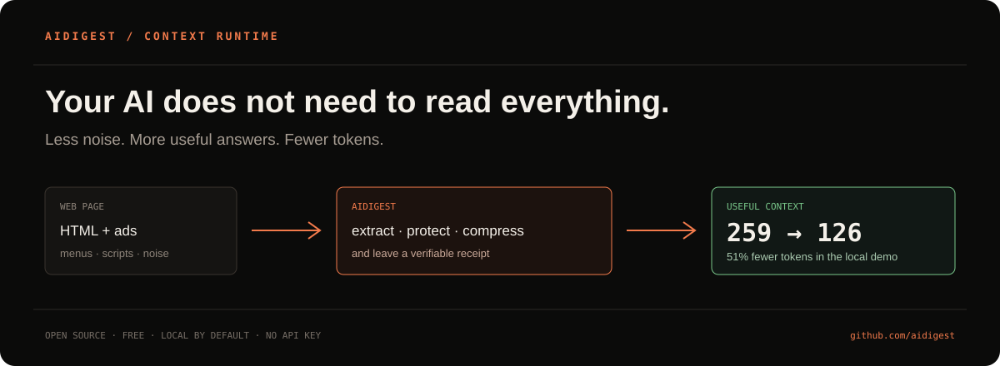
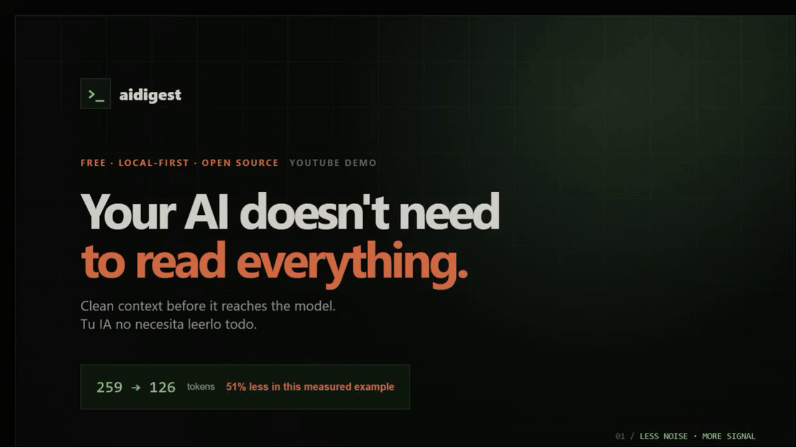

OPEN SOURCE · LOCAL-FIRST · FREE
Your AI does not need to read everything.
aidigest keeps the useful part of a page, measures what changed, and gives your agent a cleaner context before the reading gets expensive.
No API key. No account. The lab runs in this browser.
SEE IT ON YOUR OWN TEXT
A small experiment before a big promise.
Paste a page, README, or agent prompt. This browser-only preview removes common navigation and boilerplate, then shows an approximate receipt.
Nothing is uploaded. This preview is an estimate; the desktop app and CLI use the full extractor.

THE UNUSUAL GITHUB PART
Make every pull request explain its context.
Add one step to a repository and aidigest leaves a compact receipt on the pull request. It runs inside GitHub, needs no model key, and helps teams decide what their agents really need to read.
name: context receipt
on: pull_request
permissions:
contents: read
pull-requests: write
jobs:
receipt:
runs-on: ubuntu-latest
steps:
- uses: actions/checkout@v5
- uses: iarttools/aidigest@main
with:
paths: README.md,docsMEASURED, NOT MARKETING
The result depends on the page. That is why aidigest shows the receipt.
The chart below comes from the reproducible local benchmark included in the repository. It is a comparison of operations, not a promise about every website or model.
Menus, scripts, repeated blocks, and common boilerplate can stay out of the model context.
Known instruction-like signals are flagged so a person or agent can review them.
The portable panel, CLI, MCP server, and preview can work without a hosted account.
30 SECONDS
See the whole idea before you install it.
The preview shows the same journey as the panel: noisy input, cleaner context, measured savings.
Open the full project